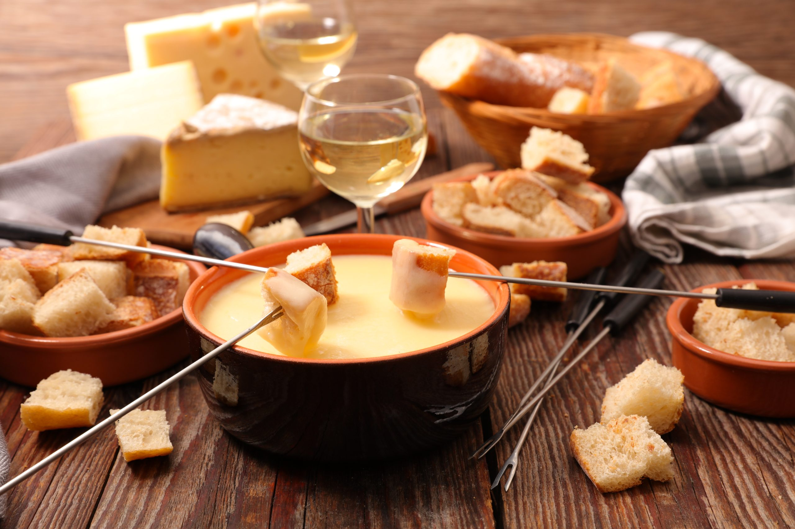
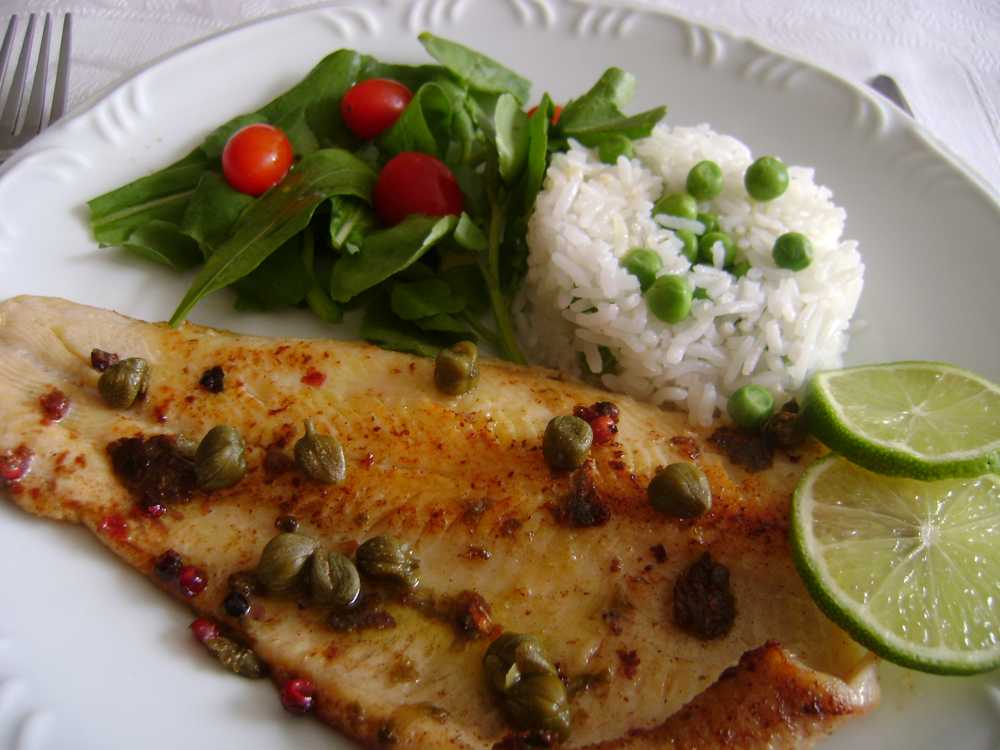
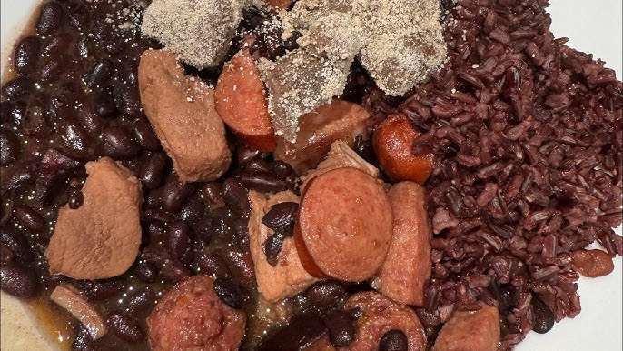
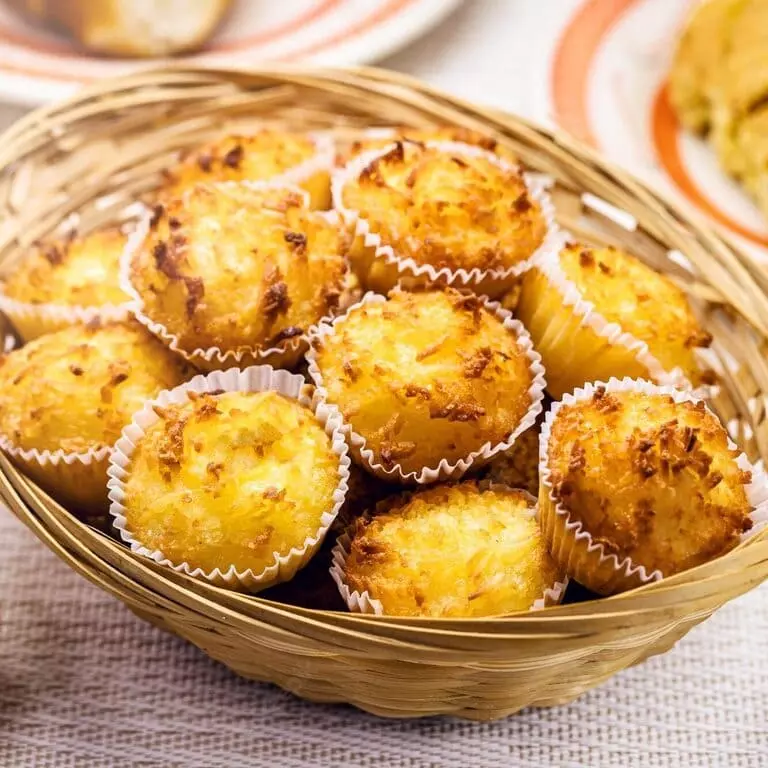

Fondue de Queijo

O fondue de queijo é um prato quente de origem suíça
feito com queijos derretidos, vinho branco e temperos,
servido em uma panela especial para ser consumido mergulhando
pedaços de pão.
O prato nasceu na Suíça como uma forma
prática de aproveitar restos de queijo duro e pão amanhecido
durante o inverno.
Recomendações de lugares:
- Truta & Boa Cia
- Aubergue Suisse
- Kai Pai Restaurante
Truta com Alcaparras

A truta com alcaparras é um prato clássico da culinária que combina a carne macia e o sabor suave da truta com o toque ácido , salgado e marcante das alcaparras, geralmente refogadas na manteiga
Recomendações de lugares:
- Truta Le Bon Bec
- Truta & Boa Cia
- Restaurante Manacá
Feijoada Suíça

A "feijoada suíça" é uma versão da tradicional feijoada brasileira servida em restaurantes na Suíça, adaptada com ingredientes locais ou apreciada pelo público europeu
Recomendações de lugares:
- Swiss Beergarden
- Restaurante Castelo Vila Suíça
- Gustu Espaço Gastronômico
Queijadinha

A queijadinha é um doce tradicional brasileiro feito com coco ralado, queijo, ovos e leite condensado. Fica firme e dourada por fora, e úmida ou cremosa por dentro. É servida em pequenas porções, geralmente em forminhas de papel.
Recomendações de lugares:
- Casa Cônego
- DU Confeitaria & Pães Artesanais
- Moments Patisserie